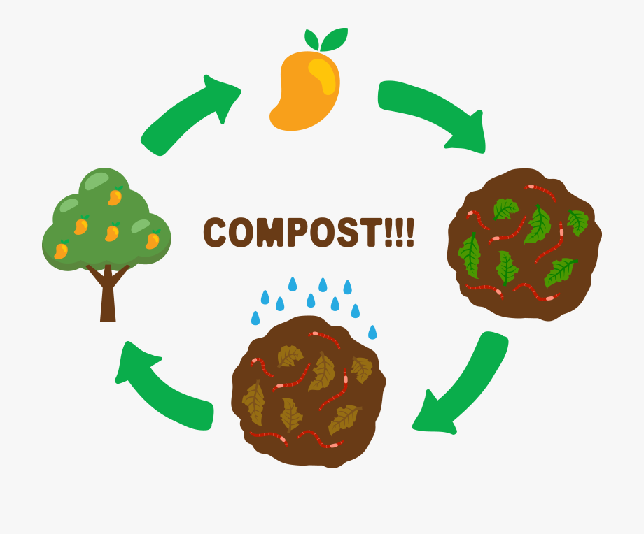

Some Recycling Centers only accept
clear plastic bottles of Grades under 3.
Check with you local recycling center
for their policy.
Gift cards cannot be recycled at typical
recycling centers. you can send them to
Earthworks Systems, a mail-in program
that recycles PVC.
Many cities will collect trees at the curb
for the two weeks following Christmas,
making treecycling a convenient option
Oil-based paint can’t be recycled, however
water based paint can be at certain locations.
Make sure you check your local guidelines before
sending your paint to a Waste Disposal Service!
Remove anything inside the bags, such as receipts,
stickers, or crumbs. All these items will contaminate
your bag load. Make sure any bags you are recycling
have a #2 or #4 plastic symbol on them.
For boxes that are food-soiled (such as pizza boxes),
cut out any oil stains before recycling. Food-soiled
paper doesn't have a recycling market.
Frozen food boxes often have a waxy coating or
are made of composite material, making them
impossible to recycle. However, they can also
be made of 100% cardboard, so make sure to
double check when recycling frozen food boxes.
Despite what you may think, shredded paper is
not recyclable. In this case, it's best to compost
or reuse as animal bedding or in art projects.
Light bulbs, although made of glass and metal, are
not always recyclable. Check with your local
recycling guidelines to see how to recycle these.
While these containers are recyclable, it is
they cannot be recycled if there's food residue.
Make sure to rinse off any remaining oils from
these takeout boxes.
Make sure to break down any cardboard boxes
before putting them in the recycling bin.

For food waste and other biodegradable materials,
consider composting them. This minimizes waste
sent to landfills and helps create fertile soil.